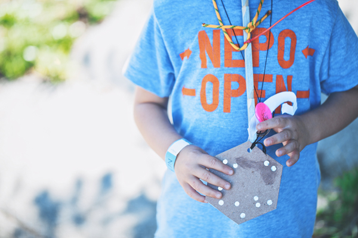

NEPO House is proud to present
NEPO 5K DON'T RUN 2014
SATURDAY SEPTEMBER 6th 2014
From Hing Hay Park (ID) to NEPO House (Beacon Hill)
For just one day local artists transform nearly 5km of ordinary city streets into an urban wonderland. Come see their site-specific installations and performances, bring your friends, kids, uncles and aunts, and remember: hop, skip and jump - just don't run!
ARTISTS
Vis-a-Vis Society / Alexa Anderson, Estee Clifford and Corey Kingston / Ruben David / Akiko Masker / Favorite Art Projects: Leo Berk and Claire Cowie / Keeara Rhoades / Rumi Koshino / Calie Swedberg / Joana Stillwell and Yael Nov / Megumi Shauna Arai / Francesca Lohmann / Mel Carter, Anna Erickson and Ripple Fang / Samuel Wildman / Adam Boehmer / Rebecca Cummins / Kristin Schimik / Aaron Murray / Joey Veltkamp and Ben Gannon / Nicholas Nyland / Julia Freeman / Cable Griffith / Brandon Aleson and Jesse Montini-Vose / Elizabeth Gahan / Kathryn Rathke and Barry Wright / Saya Moriyasu / Colleen RJC Bratton / Tribes Project / Sylwia Tur / Amanda James Parker / Trevor Brown / meadow starts with p / Neuroses / Marek Stepan / Ashleigh Robb and Ivana Kartzov / Eirik Johnson / OHM / Kat Larson / Maggie Carson Romano / Greg Lundgren / Chris Burnside / John Teske and Nat Evans / Ilysia Van Deren / Eric Aguilar / Reilly Sinanan / Ken Turner / Avalanche + the Diffuser / Glenn Herlihy / Rafael Soldi / Gala Bent and Nick Strobelt / Petra Franklin / Graham Downing / Matthew Offenbacher
CURATORS: Klara Glosova, Sierra Stinson, Zack Bent and Serrah Russell
START IN HING HAY PARK (423 Maynard Ave S) 1:00 PMADMISSION $15. Children are free. Please bring cash.
Registration by Vis-a-Vis Society 12:00 - 3:00 PM
MC Willie Fitzgerald
Art Tours by the Frye Art Museum docents
ARTWALK 1:00 - 6:00 pm
FINISH LINE AT NEPO HOUSE (1723 S Lander St)
DJ Sharlese / Performances curated by Alice Gosti 4:00 - 6:30 PM
Chastity Belt / Dude York 7:00 - 9:00 PM
Music organized by Help Yourself Records
Drink or Don't Drink Garden 3:00 - 9:00 PM
Food trucks: Chopstix Mobile and Curb Jumper Street Eats
We recommend taking Light Rail. Stations located a few blocks from both start and finish line.
Posters by Jonathan Horn
Maps by MKNZ Porritt
Water and recycling station provided by Friends of Lewis Park.
Stage for performances donated by Velocity Dance Center.
Beer donated by the generous Hilliards.
Contact: nepohouse@gmail.org
This project was supported in part by a grant from the Seattle Office of Arts & Culture.
This project was supported, in part, by an award from 4Culture.
This program is also supported in part by a grant from the Washington State Arts Commission,
and a grant from the National Endowment for the Arts (NEA).